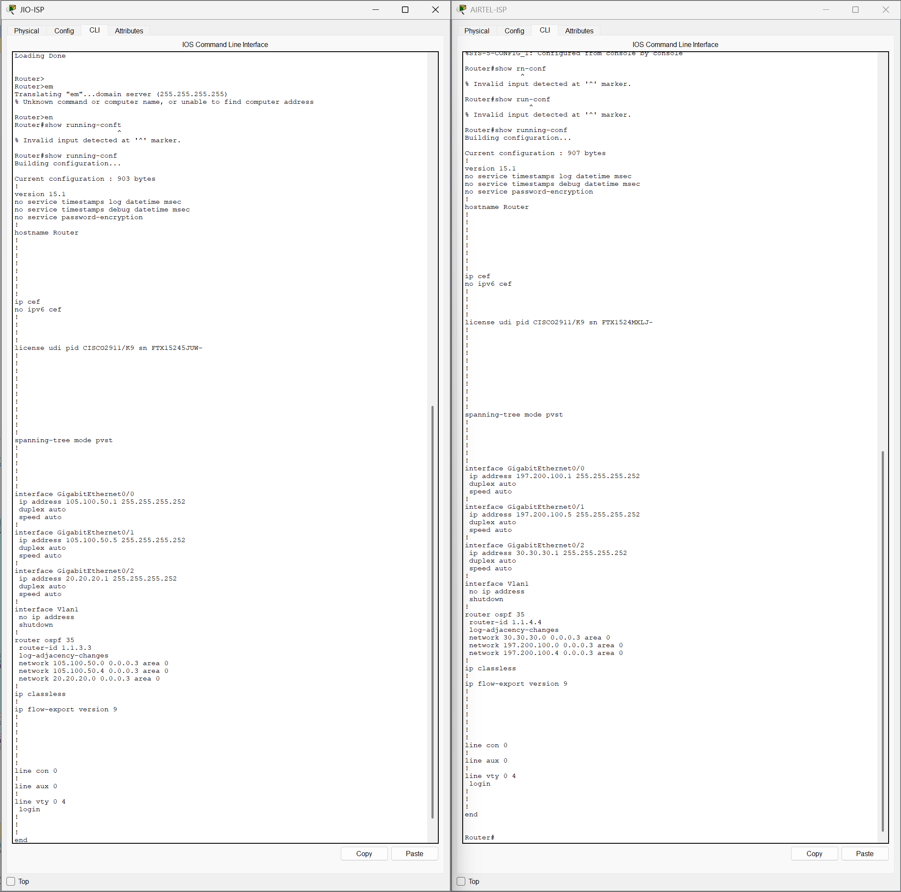

Description of VLANs, routing protocols (e.g., OSPF/EIGRP), and NAT configured in Packet Tracer.
CLI output showing the WAN interface IP settings, default routing, and NAT configuration on the ISP edge router.

Download Packet Tracer (.pkt) File